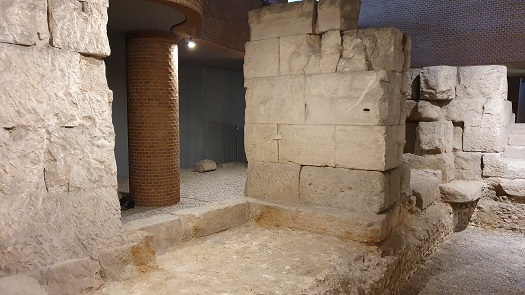
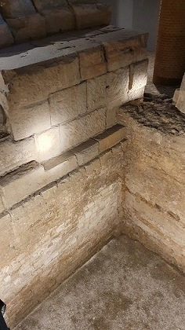
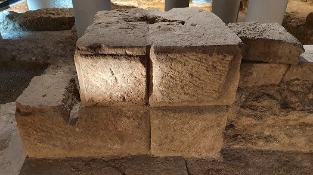
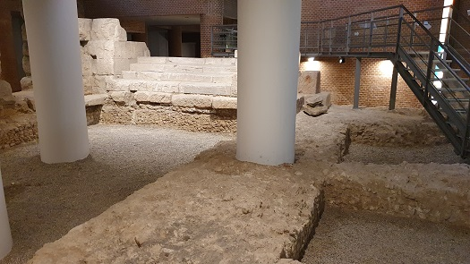

|
PUERTO FLUVIAL
Se
conserva la estructura de un gran edificio que constituía el limite
noreste del foro de Caesaraugusta y que ponía en comunicación a este con
la orilla del Ebro, donde se situaría el puerto fluvial. El río en época
romana era navegable y en el se desarrollaría un importante e intenso
comercio.
|

En época romana, el
río Ebro era navegable desde Dertosa (Tortosa), donde existía un puerto
mixto marítimo y fluvial, hasta Vareia, la actual Logroño, y a lo largo
de sus orillas se desarrollaría un intenso comercio que favoreció la
aparición de puertos fluviales en varias ciudades.
El puerto de Caesaraugusta era el principal enclave redistribuidor en el centro del
valle tanto de mercancías procedentes del interior: trigo, madera, hierro,
pieles, lino, etc. Y como de la costa; vino, salazones, cerámicas,
mármoles, joyas, etc.. |
 |
Situadas en el ángulo
nordeste del foro, las instalaciones portuarias se extendían por la orilla
derecha del río, aprovechando el carácter tranquilo de las aguas en esta
zona. Estas instalaciones contaban con un gran edificio destinado a
funciones de almacenaje, que se abría al río por una bella fachada de
arquerías. Desde esta arquería se accedía a un vestíbulo que a través de
una escalinata comunicaba las instalaciones portuarias con el recinto del
foro.
|
El conjunto
portuario se construyó en torno al cambio de era, se conservan las
marcas de cantería de las legiones fundadoras - IV Macedonica, VI Victrix y X Gemina - en algunos de sus sillares.

A finales del siglo I o en la
primera mitad del siglo II, se completan sus instalaciones con la
construcción de un mercado, macellum al este del gran edificio.
|

El abandono de
estas instalaciones se ha fechado hacia mediados del siglo VI, momento en que se ciegan las grandes arquerías que daban
al río quizás para hacer frente al asedio franco del año 541. La
actividad portuaria continuó durante los siglos siguientes.
|
Ver
Puertos romanos
|